Configuration
Open Options > Configuration. The dialog has one tab per topic. Changes take effect when you click OK; Cancel discards them. If the tab strip is too narrow for all tabs, use the small arrows at its right end to scroll.
Operator
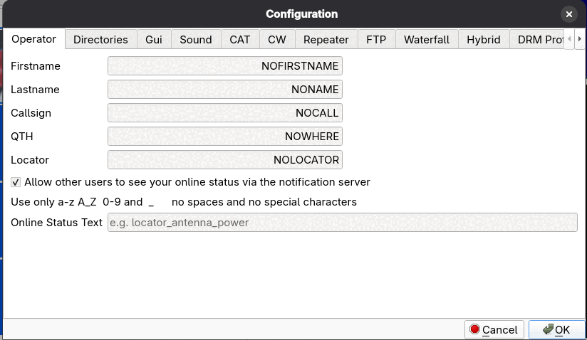
Your Firstname, Lastname, Callsign, QTH and Locator. The callsign is what the program sends for the waterfall ID, and it identifies you in hybrid-mode notifications.
Allow other users to see your online status via the notification server lets other stations see that you are on air. The “notification server” is the same hybrid FTP server that is set up on the Hybrid page; there is no separate server and no built-in default. The option is on by default but does nothing until a Host is entered on the Hybrid page.
Online Status Text is a short text that other stations see next to your callsign, for example locator_antenna_power; use only a-z, A-Z, 0-9 and underscore, with no spaces or special characters.
How it works: when the program starts in DRM mode with the option ticked and a Host configured, it uploads an empty file named
callsign_statustext to the Online Status Directory on the server. Other stations read that directory with the
Who is on? button on the Receive tab's DRM page (see Receiving). The file is removed when you exit the
program normally with File > Exit. The status is published once, at start-up, and is not refreshed: it is only listed for one hour, and
nothing is published if you start in an SSTV mode or switch to DRM later. Restart the program in DRM mode to publish again.
Changing the callsign or text in the dialog does not republish until the next start.
Directories
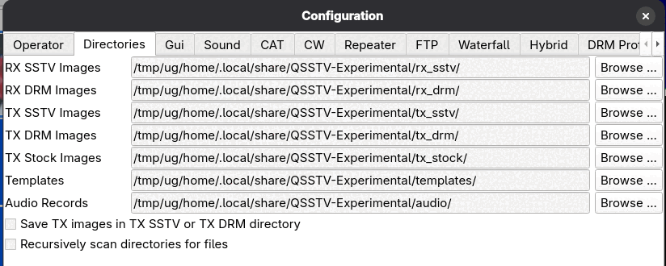
Where the program stores things: RX SSTV Images, RX DRM Images, TX SSTV Images,
TX DRM Images, TX Stock Images, Templates and Audio Records (recordings made when you choose a
recording option on the Sound page). Use Browse ... to pick another folder. By default these are subfolders of the
program's data folder, for example ~/.local/share/QSSTV-Experimental/rx_sstv/ on Linux.
- Save TX images in TX SSTV or TX DRM directory
- Keeps a copy of every picture you transmit.
- Recursively scan directories for files
- Also looks in subfolders when building the gallery.
- Documentation URL
- Leave blank to open this built-in guide from Help > Users Guide. Enter a web address to open that page instead.
Gui
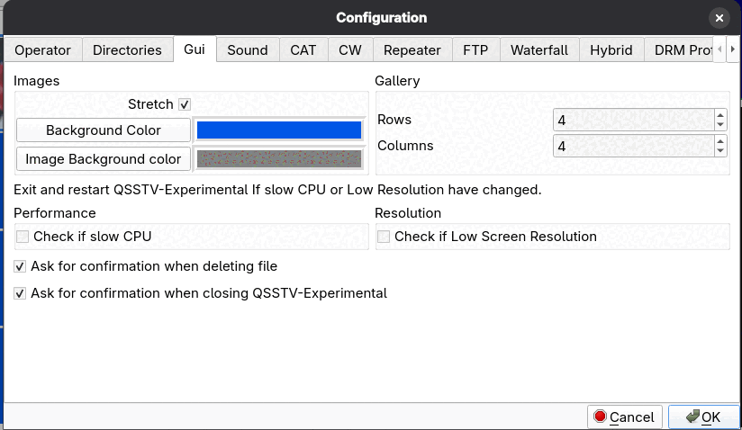
- Images: Background Color, Image Background color, Stretch
- Colors used behind pictures in the viewers, and whether pictures are stretched to fill their area.
- Picture editor
- The program that Edit picture opens a copy of a picture in;
%fstands for the file. Press Detect to choose from the editors found on this computer. Empty means the first one found, or the system's default. See Editing a picture. - Smooth Display Scaling
- Smooths pictures when they are scaled to fit the window, in the Receive, Transmit and Gallery tabs. Turn it off to see the raw pixels and scan lines.
- Gallery: Rows and Columns
- How many thumbnails the gallery shows per page.
- Check if slow CPU
- Performance option for slow computers.
- Check if Low Screen Resolution
- Option for small screens; restart the program after changing it.
- Ask for confirmation when deleting file / when closing
- Turn the confirmation questions on or off.
The two options slow CPU and Low Screen Resolution take effect after you exit and restart the program.
Sound
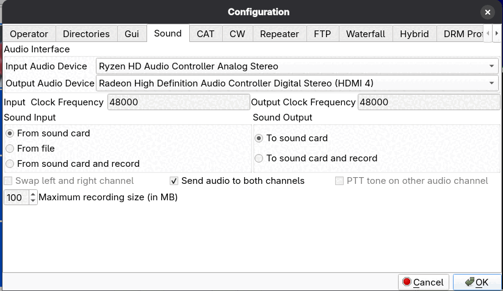
- Input Audio Device, Output Audio Device
- Your sound devices (the program uses Qt Multimedia, so it sees the devices your operating system offers).
- Input Clock Frequency, Output Clock Frequency
- The sample rate of the sound card, nominally 48000. The calibration tools adjust these; see Calibration. Normally you do not edit them by hand.
- Sound Input
- From sound card; From file; or From sound card and record.
- Sound Output
- To sound card; or To sound card and record.
- Swap left and right channel
- Swaps the stereo channels of the transmit audio.
- Send audio to both channels
- Sends the transmit audio to both left and right channels. This is useful when the interface sums the two channels (for example CM108-based rig interfaces), which gives about 3 dB more output; you may need to lower the TX drive level. While it is ticked, Swap left and right channel and PTT tone on other audio channel are grayed out. It is ticked by default.
- PTT tone on other audio channel
- Puts a PTT tone on the channel that does not carry the picture audio, for interfaces that derive PTT from audio.
- Maximum recording size (in MB)
- Limit for recordings made with the record options.
If you change the audio devices, the program restarts its sound handling when you click OK. If the audio device disappears (for example after a USB unplug or Windows sleep and resume), the program recovers when it comes back.
CAT
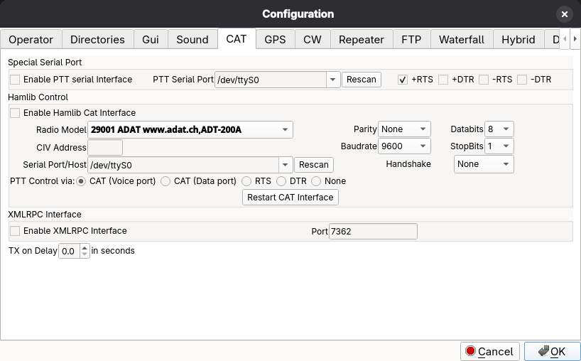
Rig control and PTT. There are three independent parts.
The PTT Serial Port and Serial Port/Host boxes are lists of the serial ports found; Rescan next to each looks again, and you can type a name that is not listed
(for Serial Port/Host also the host:port of a rig server, for the radio models that use one). On Linux the lists hold the names under /dev/serial/by-id, for example
usb-Silicon_Labs_CP2105_...-if00-port0: they name the adapter, so they keep working when you plug it into another socket (/dev/ttyUSB0 may become /dev/ttyUSB1).
A serial port that has no such name, such as the built-in /dev/ttyS0, can be typed in. The CAT, PTT and GPS ports must be different ports; a by-id name and the
/dev/ttyUSB0 it points to count as the same one.
Special Serial Port
Enable a plain serial port for PTT: tick Enable PTT serial Interface, set PTT Serial Port, and choose which lines key the transmitter with +RTS, +DTR, -RTS and -DTR (the sign sets the polarity).
Hamlib Control
Tick Enable Hamlib Cat Interface to control a rig through Hamlib. Pick your Radio Model, the Serial Port/Host, and the serial settings the rig needs: Baudrate, Parity, Databits, StopBits and Handshake. For Icom radios fill in the CIV Address. PTT Control via selects how Hamlib keys the radio: CAT (Voice port), CAT (Data port), RTS, DTR or None. Restart CAT Interface applies changes without leaving the dialog. With CAT working, the status bar shows the rig frequency.
XMLRPC Interface
Enable XMLRPC Interface lets another program (for example a logger or a digital-mode suite) control the radio through the XML-RPC port (default 7362). When it is enabled, the program does not send the extra Hamlib data command from the Frequencies page.
TX on Delay
The time in seconds between keying the transmitter and starting the audio, for radios that need a moment to switch.
GPS
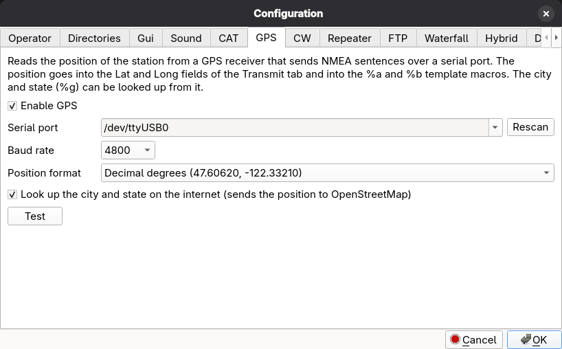
Reads the position of the station from a GPS receiver that sends NMEA sentences over a serial port (most USB GPS receivers do). The position goes into the Lat and
Long boxes on the Transmit tab and from there into the %a and %b template macros; see GPS position.
Tick Enable GPS, choose the Serial port (the list shows the ports found; Rescan looks again, and you can type a name that is not listed) and the
Baud rate (4800 or 9600 for most receivers). The GPS needs a port of its own: it must differ from the CAT serial port and the PTT serial port (a port that CAT or PTT uses is refused, by the checkbox as well as by the Test button). The port is opened only while a position is read.
On Linux the list holds the names under /dev/serial/by-id, for example usb-Silicon_Labs_CP2105_...-if00-port0: they name the adapter, so they keep working when you plug it into another socket
(/dev/ttyUSB0 may become /dev/ttyUSB1). A serial port that has no such name, such as the built-in /dev/ttyS0, can be typed in.
Read the GPS before each WA8LMF beacon transmission makes WA8LMF Beacon Mode read a fresh position for every picture.
Position format chooses how the Lat and Long boxes, the GPS button and the %a and %b macros write a position, and it applies to a position you type as well as to one read from the GPS.
Decimal degrees (the default) is the notation of online maps, for example 47.60620 and -122.33210, and what you type is printed as typed.
Degrees and decimal minutes is the native notation of GPS receivers and APRS: 47 36.37N and 122 19.93W, with minutes to two decimals, N, S, E or W instead of a minus sign, and the longitude always padded to three digits
(084 23.82W). In this format whatever you type or paste into the boxes is converted when you leave the box, so you can paste decimal degrees from a map (47.6062, -122.3321) or write minutes and seconds
(47°36'22"N) and get 47 36.37N back. Text that is not a position is left alone. Changing the format converts the boxes. The Test button shows the position in the format chosen on the page.
Look up the city and state on the internet is off until you tick it, because the position leaves your computer: it is sent to the Nominatim service of
OpenStreetMap, which answers with the city and state for the Place box and the %g template macro. A position within about a
kilometer of the last one is not asked again, so a station that stays put makes one request. The connection is secure (https): Windows uses its own TLS, and on Linux the OpenSSL libraries have to be installed, as they normally are.
With no connection the Place box keeps its text.
Test reads the position now, with the port and baud rate shown on the page (they do not need to be saved first), and shows the result or the reason it failed. With the lookup ticked it also shows the place. A receiver that sends data
but has no fix yet, for example indoors, is reported as such. On Linux your user must be allowed to read the serial port (usually the dialout group).
CW
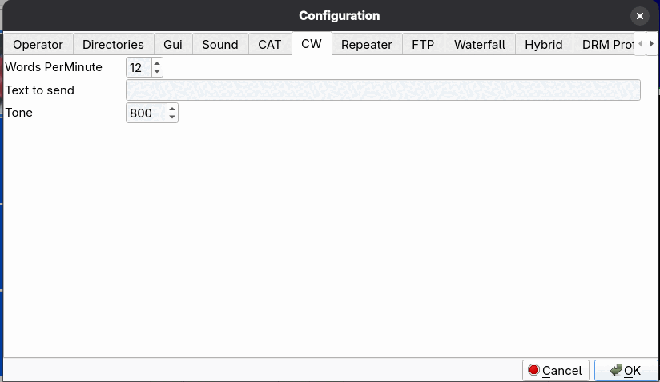
Words PerMinute, Text to send and Tone (audio frequency in Hz) for your CW identification. It is sent by the CW ID button in the status bar, and at the end of a transmission if the CW checkbox on the Transmit tab is ticked. This works for SSTV and DRM pictures.
Repeater
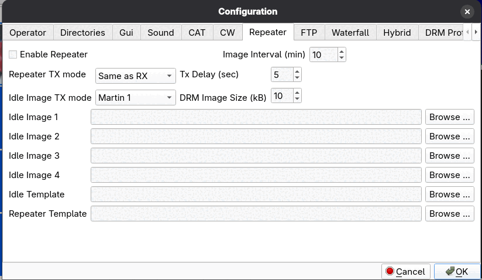
Settings for running the program as an unattended SSTV repeater. Tick Enable Repeater to turn it on. You choose the Repeater TX mode (Same as RX by default), the Tx Delay in seconds, and the DRM Image Size in kB. While idle, the repeater transmits one of up to four Idle Images or an Idle Template every Image Interval minutes in the Idle Image TX mode. The Repeater Template and Idle Template are the templates used for repeated and idle pictures.
FTP
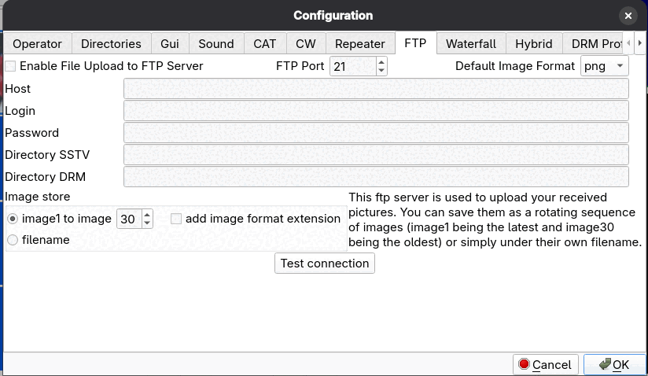
Uploads received pictures to a web or FTP server. Tick Enable File Upload to FTP Server and fill in Host, FTP Port (21 by default), Login and Password, the remote Directory SSTV and Directory DRM, and the Default Image Format. Test connection checks the settings.
Under Image store choose how files are named on the server: as a rotating sequence image1 to image N (image1 is always the latest and the highest number the oldest), optionally with the image-format extension added, or under their own filename.
Use a dedicated FTP account that has access only to the upload directory.
Waterfall
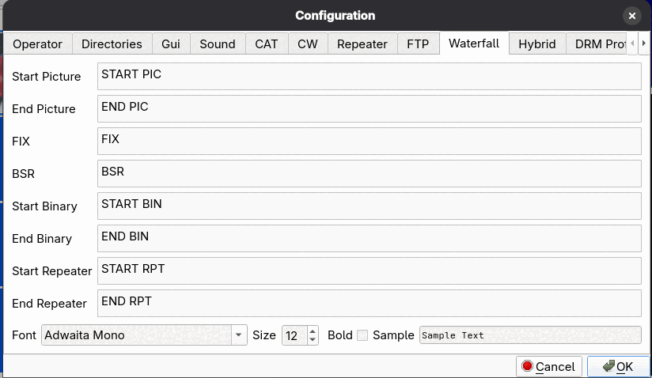
Short texts that are transmitted as part of the audio so that they show up as readable text on a waterfall display: Start Picture, End Picture, FIX, BSR, Start Binary, End Binary, Start Repeater and End Repeater. The Font, Size and Bold settings control how the text is drawn; the Sample box previews it. The defaults are fine for normal use.
Hybrid
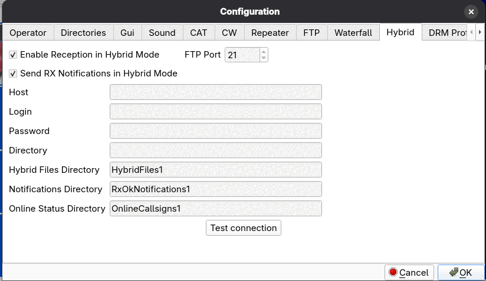
Hybrid mode combines a DRM transmission over the air with an internet server. The sender uploads the picture (Transmit tab, Hybrid and Upload Now) and the receiving station can fetch it. This page holds the server settings: Enable Reception in Hybrid Mode, the FTP Host, FTP Port, Login, Password and Directory, the Hybrid Files Directory, and, if you tick Send RX Notifications in Hybrid Mode, the Notifications Directory. The Online Status Directory is where the online status files are kept; it is used by the Operator page's online status option and the Who is on? button, whether or not RX notifications are ticked. The directories are relative to the server Directory and must already exist on the server. Test connection checks the server and these directories. Both stations must use the same server and the same directory names, otherwise they will not see each other.
DRM
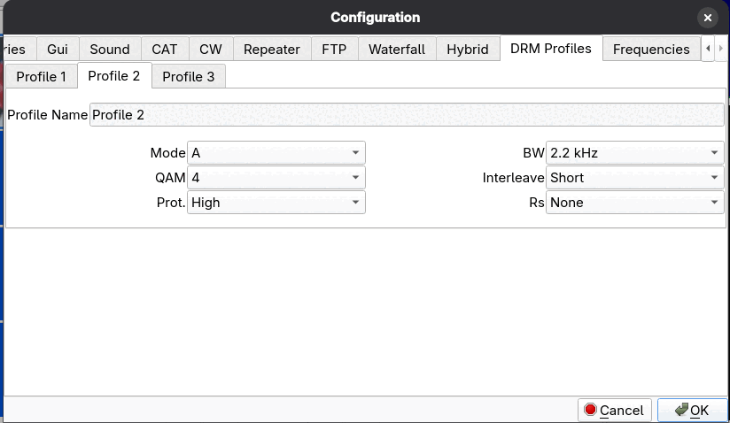
Three saved sets of DRM transmit parameters, on the tabs Profile 1, Profile 2 and Profile 3. Each has a Profile Name, Mode (A, B or E), BW (2.3, 2.8 or 4.8 kHz), QAM (4, 16 or 64), Interleave (Short or Long), Prot. (High or Low) and Rs (Reed-Solomon: None, RS1 to RS4). The profiles appear in the Profile list on the Transmit tab's DRM settings. See Digital SSTV (DRM) for what the parameters mean.
Show partial image while receiving (DRM), below the profile tabs, displays a DRM picture while it is still arriving: a JPEG2000 image appears blurry and sharpens as more data comes in, a JPEG fills in from the top. The finished picture then replaces the preview. On by default. Not available for Reed-Solomon coded transmissions, which can only be shown once decoding succeeds.
Frequencies
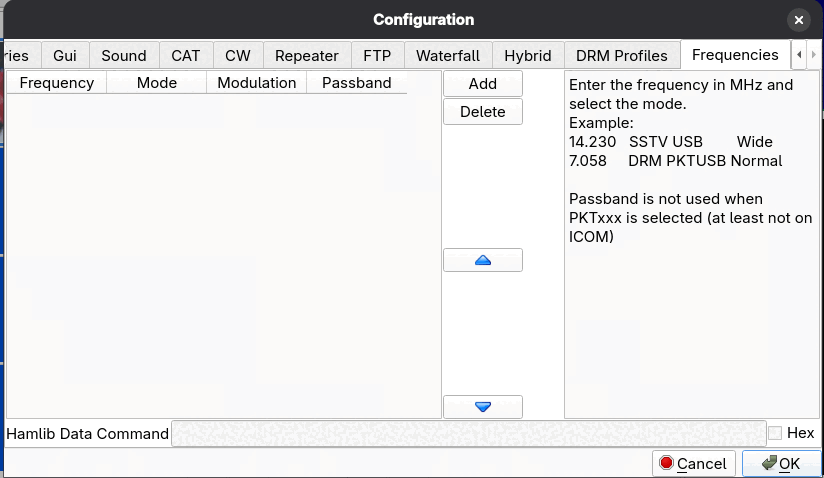
A list of frequencies for the selector in the main window's status bar. Click Add and fill in the row; Delete removes one; the arrow buttons reorder the list. The columns are:
- Frequency: in MHz.
- Mode:
SSTVorDRM. This decides in which of the two lists the entry appears. - Modulation: the rig mode to set, for example USB.
- Passband: for example Normal or Wide. It is not used when a
PKTxxxmode is selected (at least not on Icom).
Examples from the dialog: 14.230 SSTV USB Wide and 7.058 DRM PKTUSB Normal.
Hamlib Data Command (with the Hex checkbox) is an optional raw command sent to the rig after the frequency and mode have been set. Frequency selection needs CAT control to be enabled.